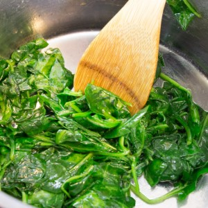
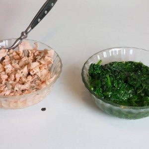
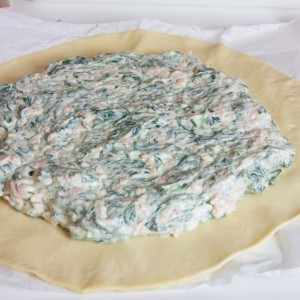
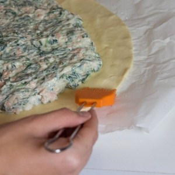
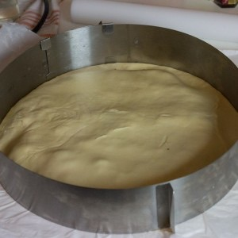
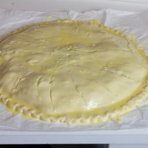

Tourte au saumon

Aussitôt la nouvelle année installée qu’il faut déjà se mettre à tirer les rois! Ce week-end a donc était placé sous le signe de la galette. Entre la classique frangipane au dessert et cette tourte au saumon façon galette des rois salée on s’est vraiment régalés.
Quand Val de Rance m’a proposé de vivre une expérience cidronomique tout au long de l’année, c’est avec un immense plaisir que j’ai accepté. Comme vous le savez maintenant quand il s’agit de m’amuser, de découvrir, de partager et de cuisiner je suis la première à avoir la main levée. Pour cette première expérience, c’est donc autour de l’épiphanie que je me suis éclatée en proposant une galette des rois salée (en réalité c’est tout bêtement une tourte au saumon^^) pour accompagner mon cidre brut de chez Val de Rance. Un quelconque autre jour de l’année j’aurai sans doute appelé cette recette tourte au saumon mais pour l’occasion l’idée du trompe l’œil se prêtait pas mal (et ça a plutôt bien fonctionné). Je vous propose donc ici un combo classique qui fonctionne du tonnerre à la maison puisque dans ma galette salée vous trouverez du saumon mais aussi des épinards, de la ricotta et un peu de jus de citron. L’idée m’est venue car mon chéri a eu envie (soudainement) de prendre une tourte un peu similaire dans un bistrot pendant nos congés (alors que sur la carte il y avait des hamburgers, plat de viande etc…). Je peux vous dire que c’est resté bien au chaud dans un petit coin de ma tête car moi qui adore les épinards je n’allais pas laisser passer cette occasion et je me suis mise en tête d’essayer de refaire une recette à peu près similaire. Me voilà donc avec mes petites bulles de cidre au goût frais et léger à vous présenter ma dernière recette qui a encore fait manger de bons légumes à mon chéri ;-). Je vous laisse découvrir ma tourte au saumon (je vous assure qu’elle est facile à faire et absolument dé-li-cieu-se) et si vous la faites comme moi pour l’épiphanie (bon maintenant il faudra attendre un an!) n’hésitez pas à la présenter comme une galette des rois (trompe l’œil assuré!!)
J’en profite également pour vous souhaiter une excellente année 2016 et je vous dis à très vite pour de nouvelles recettes!
Ingrédients
- Pâte feuilletée - 2
- Epinards frais - 350g
- Saumon - 300g
- Jus de citron - 3-4 càs
- Ricotta - 400g
- Huile d'olive
- Sel, poivre
- Jaune d'oeuf - 1
- Lait - 2 càs
Instructions
- Préchauffer le four à 200°
- Cuire les épinards : Dans un grand faitout, verser (environ) 3 càs d'huile d'olive, ajouter les épinards Cuire sur feu moyen Les épinards vont rétrécirent et rendre de l'eau. Quand il n'y aura plus d'eau dans le faitout c'est qu'ils sont cuit (compter 7-8 minutes)
- Sortir les épinards du feu, égouttez-les (car il peu y avoir encore un peu d'eau dans le fond du faitout) et réserver
- Pendant que les épinards sont entrain de cuire, cuire le saumon : Faire bouillir un grand volume d'eau salée, plonger le saumon dans l'eau bouillante pendant 5 bonnes minutes. Sortez-le de l'eau bouillante et laissez le refroidir Une fois qu'il est manipulable, enlever la peau et détaillez-le en petits morceaux Réserver dans un bol
- Dans un saladier, mélanger la ricotta, le jus de citron, les épinards et le saumon
- Saler, poivrer
- Au centre de la première pâte feuilletée étaler le mélange (laisser de l'espace sur les bords)
- Sur les bords de la pâte, passer un pinceau légèrement humidifié avec de l'eau (cela va permettre à la deuxième pâte de bien se souder)
- Recouvrir de la deuxième pâte et bien sceller les bords
- Vous pouvez vous aider d'un moule ou d'une assiette pour bien former la galette
- Faite un petit trou au centre de la tourte en vous aidant de la pointe d'un couteau
- Dorer la galette en mélangeant un jaune d’œuf et 2 càs de lait.
- Pour décorer vous pouvez faire des dessins en vous aidant de la pointe d'un couteau
- Enfourner pendant 20-25 minutes à 200°
- Déguster tiède ou froid c'est comme vous voulez et si vous voulez vous aussi vous la jouer galette des rois salée et l’accompagner d'un cidre brut c'est encore à vous de voir!






Les tips de la communauté
Très bien reçue pour cette version salée innovante de galette des rois. Les lecteurs apprécient particulièrement l'association saumon-épinards et proposent plusieurs variantes de garnitures.
Astuces
- L'association saumon-épinards est une base excellente
- La pâte feuilleté donne une belle présentation style galette des rois
- Combiner avec le cidre brut pour un mariage parfait
- Les photos donnent vraiment envie, mettent bien en valeur la recette
Variantes suggérées
- Remplacer le saumon par du thon en conserve bien égoutté
- Utiliser des coquilles Saint-Jacques à la place du saumon
- Ajouter des lardons pour une version charcutière
- Utiliser des galettes de sarrasin à la place de la pâte feuilletée
- Ajouter de la ciboulette ou de l'aneth comme herbe aromatique